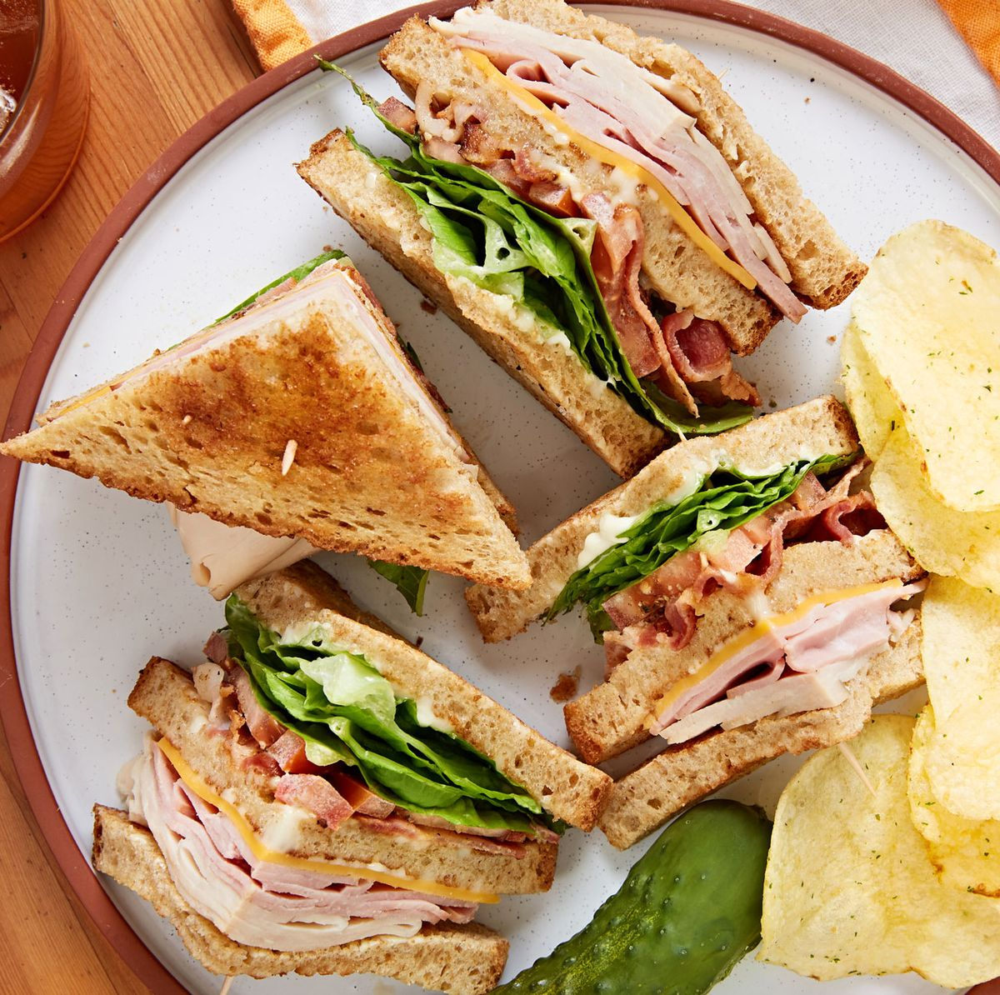

How to Make a Club Sandwich!

Description
This will teach you how to make a bangin' club sandwich
Who doesn't love some meat and bread
Ingredients
- 4 rashers streaky bacon
- 3 slices white bread
- 1 tbsp mayonnaise
- 1 hard-boiled egg, sliced
- 1 tomato, sliced
- A few thick slices chicken or turkey breast
- A small handful salad leaves
- A handful crisps, to serve, if you like
Instructions
- Heat grill to High and cook the bacon, turning halfway through, until crisp. Toast the bread and spread one slice with the mayo.
- Layer on the egg, tomato and bacon, then top with another slice of bread. Add the chicken or turkey, bacon, then lettuce. Finish with the final slice of bread and cut into quarters. Secure with cocktail sticks and serve with crisps, if you like.